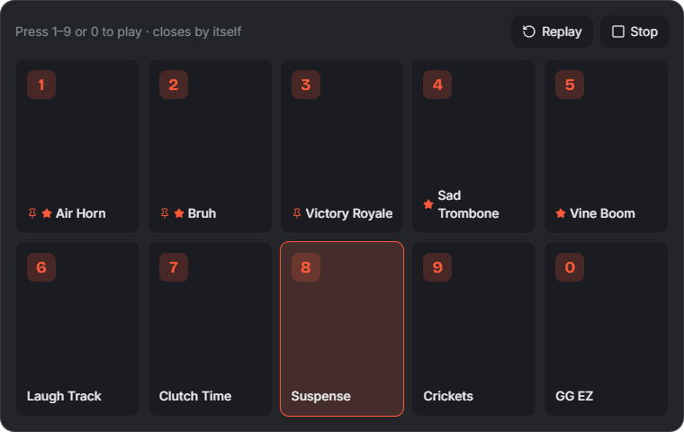

Straight into your mic
Sounds go out through a virtual microphone, and your real voice is mixed in, so you don't have to switch inputs.
Blurt plays sounds straight into your microphone, so everyone in Discord, Valorant, Zoom or your stream hears them. Fire them with hotkeys, from an in-game overlay or from your Stream Deck.

Works with anything that lets you choose a microphone
No sign-up, no ads, no premium tier. Just fast sounds, wherever you talk.
Sounds go out through a virtual microphone, and your real voice is mixed in, so you don't have to switch inputs.
Any sound on any key combo. Hotkeys work in-game and while Blurt is minimized to the tray. You also get Replay last, Random sound and Stop all.
Press Ctrl+Alt+B to see your top sounds over the game, then play them with 1–9. The game stays in focus.
Blurt holds your push-to-talk key or mouse button while a sound plays, so your squad actually hears it.
Something hilarious just happened? Ctrl+Alt+C saves the last 30 seconds of what you heard as a sound.
Play, randomize, replay, stop or clip from Stream Deck, Touch Portal or Streamer.bot with one private link.
Type a line and a voice says it into your mic. Each line is saved as a sound, so you can replay it or bind it to a key.
Drag in MP3, WAV, OGG, FLAC, M4A or AIFF files, or paste a YouTube, TikTok or Instagram link and trim the part you want.
Loudness normalization, per-sound volume, trimming and fades. Your voice can dip automatically while a sound plays.
You can't alt-tab in a clutch, so you don't have to.
Wire Blurt into the tools you already use.
Type a line, choose a voice, and it plays into your mic. It stays in your library for the next time.
Apps can't create microphones on their own, so Blurt uses a free virtual audio cable. If your PC doesn't have one, Blurt fetches it for you.
Run the installer. Your sounds and settings survive every update.
Blurt finds or installs VB-CABLE from its official site, tests it with a real signal, fixes the level and mixes in your mic.
Choose CABLE Output as your input device. That's it — start blurting.
Yes. There's no paid tier, account, ads or tracking. Blurt is MIT licensed. It only goes online when you ask it to: downloading a clip from a link, or fetching the virtual cable.
Yes. The full source code, issue tracker and every release are on GitHub. Each installer is built by GitHub Actions from the tagged source, and its SHA-256 checksum is published with the release.
Blurt isn't code-signed yet, so Windows SmartScreen shows "Windows protected your PC". Choose More info → Run anyway. You can check that your download is the official build by comparing its SHA-256 checksum with the one on this page: —. In PowerShell, run Get-FileHash Blurt-Setup.exe.
You need a virtual audio cable, because that's how any soundboard reaches your microphone. If you don't have one, press Set up my microphone and Blurt downloads VB-CABLE from vb-audio.com, checks VB-Audio's signature and opens its installer. VB-CABLE is free donationware by VB-Audio. Its licence doesn't allow bundling it inside Blurt's installer, which is why it's a separate step.
Blurt doesn't inject into, read or modify any game. The overlay is a normal always-on-top window, and sounds go through your microphone like your voice does. Auto push-to-talk sends a simulated key press. Some anti-cheat systems ignore simulated keys, so if it doesn't work in a game, hold your push-to-talk key yourself.
Some games in true exclusive fullscreen don't allow any window on top. Set the game's display mode to Windowed Fullscreen or Borderless, which looks the same. Number keys still play sounds while the overlay is open.
Only if you turn it on, and only into memory. Blurt keeps the last few seconds of what your speakers or headset play and writes nothing to disk until you press the clip shortcut. Turning it off clears the buffer.
Not yet. The macOS build hasn't been tested end to end, so we won't offer it until it has.
Updates keep everything. Uninstalling keeps your library too, unless you tick "Delete the application data". You can also back up your library to a .zip from Settings → Storage.